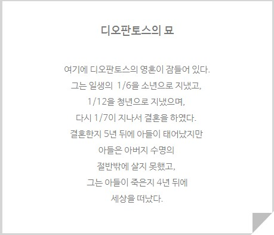

수학의 한 분야로 수 대신에 문자를 쓰거나, 수학법칙을 간명하게 나타내는 것이다. 방정식의 문제를 푸는 데서 시작되었다.
수론에서 디오판토스 방정식은 정수로 된 해만을 허용하는 부정 다항 방정식이다. 디오판토스 문제는 미지의 변수와 변수의 수 보다 적은 방정식을 제시하고, 주어진 모든 방정식을 만족하는 정수해들을 찾도록 한다.
디오판토스는 묘비에 그의 생애를 수학 식으로 풀어놓았다. 이는 일차방정식으로 답을 구할 수 있다.